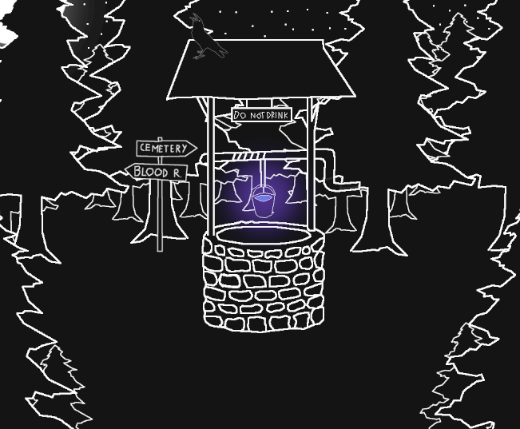
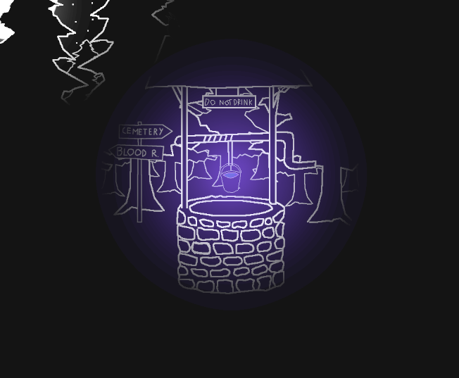
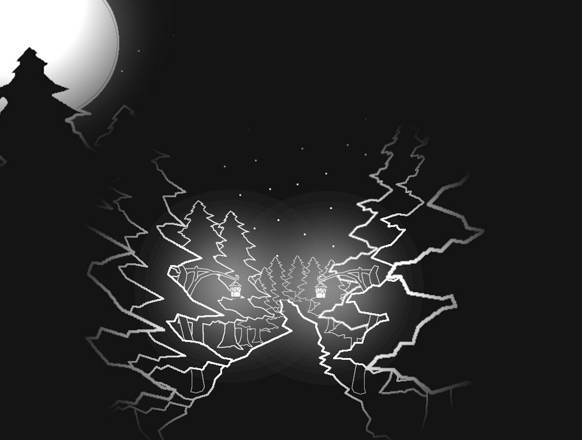
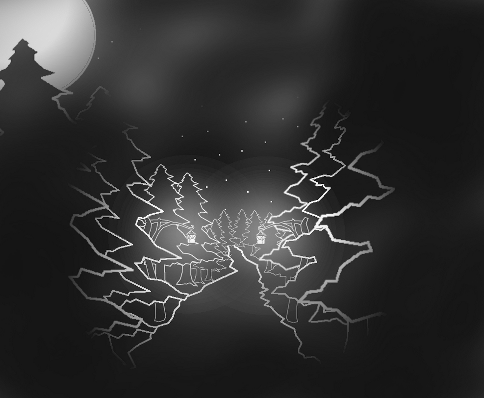
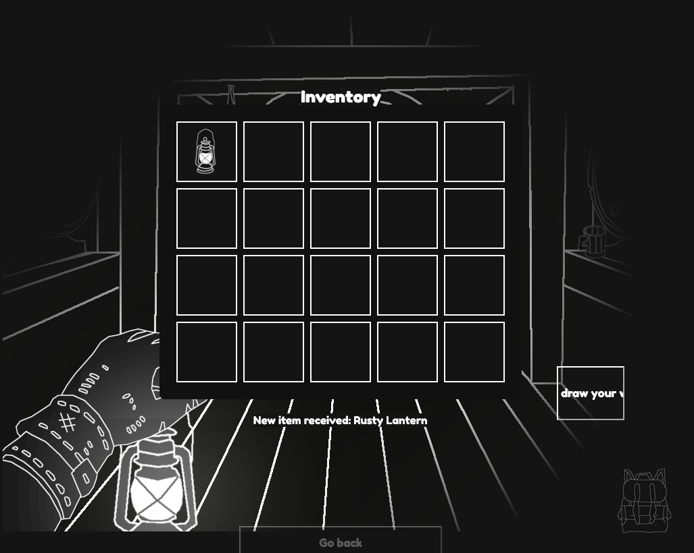

Welcome to the dev log page for my game: Spookys Hideout!
This is where i will be documenting the changes ive made to my game!
The logging starts from here (July 29th), the reason why it starts from here is that
this project was never meant to be a full game so i never logged anything and was mostly just experimenting with different things
Changes made throughout a weekend may be logged on a sunday!
Tuesday, July 29th:
(Dev log page has been made to document progress over time)
- Added light overlay on a few locations
Before -> After




Sunday, August 3rd:
-Completed the encounter/jumpscare sound for the skin reaver
-The health bar design is complete, the game over animation is yet to be finished
-Minor fixes and changes
-Added a delay when entering a new location, this will prevent moving too fast on the map
Sunday, August 9th:
-Added the delay between locations on all locations
-Minor bug fixes
-Changed a few ambiance sounds
-Death animation is finished
-Finished the audio for the wine cellar cutscene
Wednesday, August 13th:
-Finished the layout/rectangle map of the wine cellar dungeon
-Finished the code for some locations inside the wine cellar
-Added a teleport button that skips the start of the game and puts you in the wine cellar dungeon
Note: This has no effect on the game, this is purely to speed up development!
Friday, August 15th:
-Minor fixes
-Audio tweaks accross many sounds
Thursday, August 28th:*
-Added new ambiance sounds to the wine cellar dungeon
-Optimized a lot of sounds in the wine cellar dungeon
Note: This should make the wine cellar dungeon way more immersive
-Finished the box breaking mechanic
-Made a few more rooms accesible in the warehouse
-Reworked the lantern graphic, now it is a seperate layer and is not tied to the location layer
*Dev note: This update was made a week ago but never actually updated the log. Starting tomorrow i should be able to continue working on the updates
Saturday, August 30st:
-Finished the code for a few more rooms in the warehouse
Sunday, August 31st:
-The warehouse area is now fully accesible
-Fixed the visibility of the lantern asset when moving between locations
Note: Enemies and more features will be added once the whole dungeon is accesible!
-A few rooms in the left side of the wine cellar is now finished
Sunday, September 7th:
-Finished every room in the west side of the wine cellar, now the whole wine cellar dungeon is accessible!
Monday, September 8th:
-Finished the code for the door with the missing handle
-Minor fixes
Wednesday, September 9th:
-Finished the code for finding the office door handle and the interaction for using it
-Minor fixes
Sunday, September 14th:
-Finished the code for the cellar gate interaction, the dungeons code should be done soon!
Monday, September 15th:
-Minor fixes for the interaction with the cellar gate
-Finished the code for the dynamic text boxes
Note: This feature isnt in the game yet, this is being tested and refined
Wednesday, September 24th:
-Added a new logic for the text boxes, now it fades in and out smoothly and does not overlap!
-Finished the inventory logic!
Theres now:
>Backpack window with slots
>Picking up items
>Dragging items

Thursday, October 2th:
-Small changes and preparation for tomorrow!
Friday, October 25th:
Update: I was commissioned a website which i was working on until now, and now that its finished, the development is gonna continue from now on!
-Small changes to the cat scene in the wine cellar
Saturday, October 26th:
-Made progress towards the cat scene
-New project name: Everdark, Project: Everdark (while in development)
Tuesday, October 28th:
-Fixed a bug that caused the randomized ambiance sounds to run when reloading the site causing errors to loop
-Fixed a bug where one ambiance sound was failing to stop playing
Saturday, November 1st:
-Made progress towards the cat scene, it should be done by next update
-(Later today) -Made even more progress to the cat scene
Saturday, November 8th:
-Made progress towards the exit scene of the wine cellar
Sunday, November 9th:
-Added the remaining destroyable boxes
Monday, November 10th
-Added even more boxes
-Rewrote a bunch of dialogues to use the dynamic text logic
-Minor fixes
Sunday, November 16th
-Finished the full code for the cat scene and leaving the dungeon
-Experimented with the inventory/loot system
-Added a dynamic text logic for
picking up certain items. Picking up certain items will fetch the name of the item and display it in the pick-up text
Example: New item received: (fetched name data)
Tuesday, November 18th
-Made progress towards the inventory and looting system
Sunday, November 23rd
-Made graphical changes to the inventory
-Made progress towards the looting
Friday, November 28th
-Made major progress towards the looting system
Saturday, November 29th
-Made progress towards the door handle system and started working on the key system
Saturday, December 6th
-Optimized a few item related code to be dynamic instead of using hard coded logic (eg: a picked up key will now be tracked actively in the inventory instead of having a piece of code that just says "if key picked up, do this", dropping the key will result in not being able to open the gate)
Sunday, December 7th
-Fixed the tracking for both the door handle and the key, now both items use the same logic
Saturday, December 13th
-Added the backpack/equipment button to the inventory
-Added the roman numeral indicators for the hotbar tiles
-Added the left and right hand tiles in the inventory
Sunday, December 14th
-Made progress towards the inventory desgin
-Finished the logic for the quantity counter
Friday, December 19th
-Implemented a dynamic logic for equiping items to the main hands. Now only certain items can be equipped to the main hands.
-Implemented a logic for running certain scripts when certain items are equipped to the main hand
-Minor design changes/polishes
Saturday, December 20th
-Fixed a bug where dragging items from hand to hand broke the logic
-Fixed bugs regarding the hower glow
-Fixed a bug where drag and dropping items
with a quantity counter would make the counter disappear
-Added a visual indicator for when you try to drag an invalid item to the main hand
Tuesday, December 23th
-Added a logic where if you shift-drag a stack of item, it will only drag one item out of the stack
-Fixed a bug where dragging multiple stacked items into eachother would swap positions instead of stacking
-Added a small sound effect when a invalid item gets dragged to the hand slots
-Fixed a bug that would cause the quantity counter to disappear when you try to drag an invalid item to the hand slots
-Added a logic that tracks which hand an item is in for future use
Thursday, December 25th
A Holly jolly progress
-Added a custom window for when you hover over items
Later today: Finished the tooltip design
Sunday, December 28th
-Updated the hover tooltip UI
-Gave stats to the rest of the wine cellar quest items
-Added a stack and sort button to the inventory
-Added a right click context menu to the inventory
Tuesday, December 30th
-Added a logic that handles the equip sound for each item
-Added an admin panel for testing purposes, this doesnt affect the player in any way, it only speeds up development!
-Finished the side buttons on the Inventory
-Finished the hotbar UI design
-Finished the hand UI design
-Finished the status effect UI design
-Optimized the UI a little to make it more compact
-Small tweaks and changes
Friday, January 2nd
-Started working on the armor page in the inventory
-Added the ability to swap from hotbar to hand with clicks or hotkeys
-Small bug fixes
-Started working on the combat system
Sunday, January 11th
-Implemented crits for both the players and enemies
-Added a death screen animation
-Implemented a health bar for the player
-Reworked the players status bar to be dynamic
-Added status effects to enemies
-Added a small list of pre-written status effects
Monday, January 19th
-Added a low health indicator, on low health the screen pulses with a fast heartbeat
Saturday, January 24th
-Further improved the combat system
Saturday, February 7th
Back after a small break with a brand new pc, development should now be more efficent!
-Made improvements to the combat system
-Added floating damage numbers
-Made improvements to the death system
Sunday, February 8th
-Added the first enemy graphic
-Finished the logic for the combat and loot system
-Fixed issues caused by the new loot
-Added random loot generation when looting
-Added a loot all, and a transfer button to the inventory and loot windows
-Added small polish to the combat
Wednesday, February 11th
-Added a small shake effect when hitting an enemy
-Adjusted the damage overlay
-Added a heal overlay
-Adjusted the looting system after combat to make it more streamlined
-Small changes to existing stuff
Thursday, February 12th
-Implemented hurt and death sound logic for enemies
-Polished the loot window and made the UI more user friendly
-Small loot description changes
-Added a "near death" feature
-Added a preload logic so nothing shows up too early and assets have time to load
Sunday, February 15th
-Added the first consumable item and its features
-Added a global logic for consumables
-Added a cooldowm logic for consumables
-Tweaked low health and near death effects
-Tweaked the enemy hit feedback
-Added QoL visual improvements to the hotbar for better feedback
-Added a hotbar blacklist feature in the inventory
Saturday, February 28th
-Added custom animations for the following status effects: burn, poison, bleed and stagger.
-Added a custom death animation for the burn status effect
-Added custom indicators for when receiving a status effect
-Added a light meter that tracks how much time you have spent in the dark
-Started working on the book of shadows features
-Started working on the armor features
-Small QoL improvements to the combat log
Wednesday, March 4th
-Added a logic that mirrors the equipped weapon based on which hand is holding it
-Fixed various bugs related to consumables
-Added a parrying mechanic
-Status effects now display the remaining time
-Added a accuracy system for attacks
-Reworked the stagger status effect: on stagger, you are not prevented from attacking, but the attack speed and accuracy is significantly reduced
Friday, March 14th
-Major combat feedback overhaul
-Reworked floating combat numbers so they feel smoother and easier to read
-New status effect: Road to recovery: when not in combat for a minute, you start to regenerate health slowly
-Added a weapon swing recovery countdown
-Added a ready sound cue that plays exactly when attack cooldown becomes ready
-Cleared up the combat UI and added small improvements
-Small changes to the damage feedback on slash attacks
-Fixed a bug where healing up from low health would never stop the low health effects
-Improved the transitions between the low health and near death effects
-Added an improved spawn system with a total enemy count and variable spawns
-Fixed a bug where the enemy wasnt starting the fight at the same time the player was